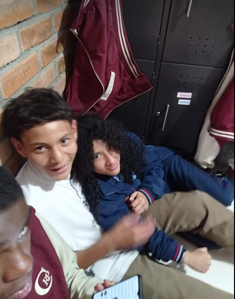
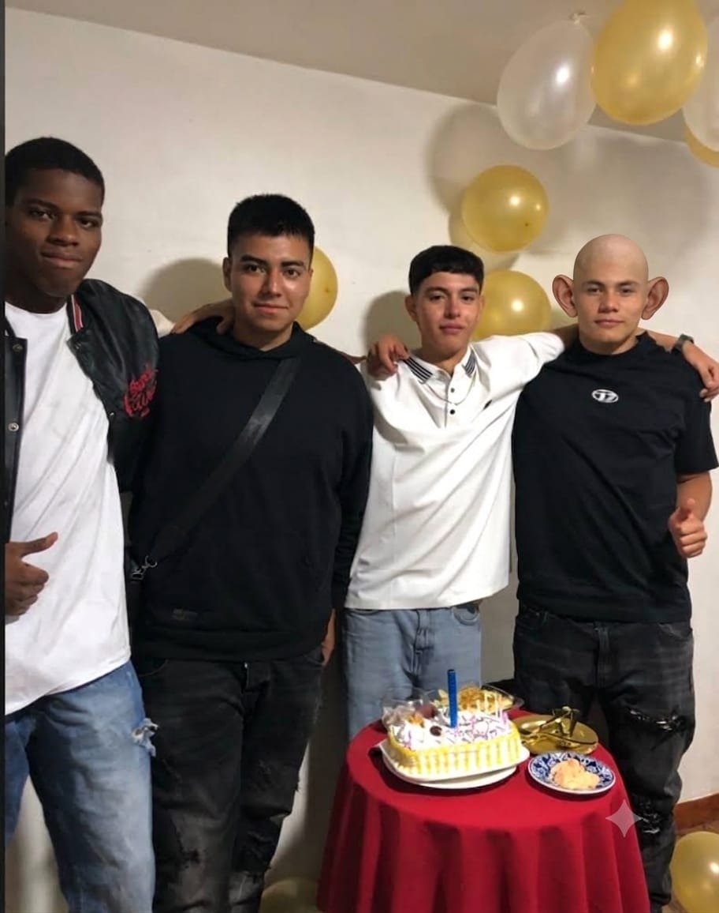

¡Dale play y llora de Aura 67!
El lider fercho cocardo le mide 18cm confirmados, 100kg en pecho, iPhone 15 negro de 128gb con ios 27, pecas, churos, trabajador, fuerte, detallista, tierno, FIEL, hermoso, lindo, precioso, lider del preu, de la u, chico popular de la high school, pecho peludo, hongo, cabezon, hace helados, es muy penoso.
Es hermoso, ig: @danicobo009; Roblox: danipro67099


¡Disfruta la pena de FERCHOTA! 🔥